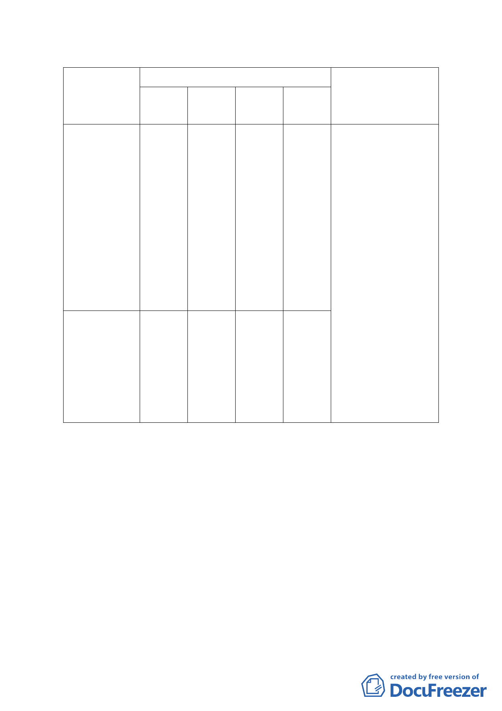

作幼稚園與國小一、二年級學制合併之幼兒學校；並開放校
園設施供民眾使用。
變更內容
位置
面積
面積
原計畫
新計畫
（公頃）
（公頃）
變更理由
臺北市北投區
泉源段四小段
地 號 771 、
771-1
、
771-2
、
保護區
771-3、772 地
號、大屯段二
小 段 362 、
368-1 地號等 7
筆土地
臺北市北投區
新民段二小段
1.62
文教區
(特)
1.62
1. 配合教育政策
2. 建構優質幼兒學
校
3. 提供社區親水空
間
4. 增益鄰近社區發
展
地號 125-1 地
文教區
住宅區 0.02
0.02
號、新民段三
(特)
小段 1、5 地號
等 3 筆土地
（四） 土地使用分區管制：(細部計畫書 P8)
1. 使用強度：建蔽率不得超過 30%；容積率不得超過 90%，
建築物高度不得超過 10.5 公尺以下之三層樓。
2. 使用項目：允許使用項目得為「臺北市土地使用分區管制
規則」第 4 組：學前教育設施、第 5 組：教育設施及第 6
組：社區遊憩設施。
3. 地下層開挖率以法定建蔽率加百分之十為限。
（五） 都市設計管制：
為達本計畫為提供良好校園教學環境、維護自然景觀風貌、
預防天然災害產生、及提升週邊環境品質，本案之開發建築
須經「臺北市都市設計及土地使用開發許可審議委員會」審
議通過後始得發照建造執照；本案涉及山坡地部分應依「臺
- 10 -